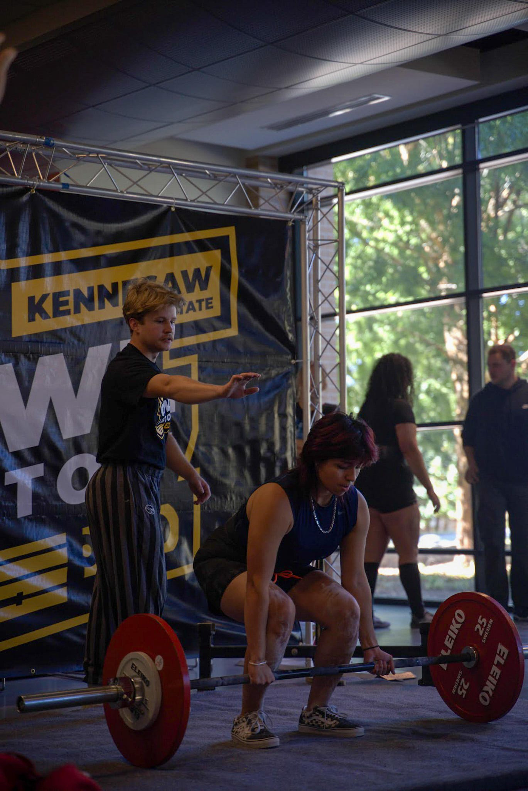

I’m a junior studying Computer Science with a Data Science concentration and a minor in Information Technology at Kennesaw State University. I live in Buford, GA, which means I commute to school—depending on traffic, the drive can take anywhere from 1 hour and 12 minutes to 2 hours. Some of my hobbies include working out, gaming, exploring tech, skateboarding, and watching shows or movies. One of my biggest personal goals is finding a balance between screen time, staying active, and maintaining a social life.
At Kennesaw State University, I’ve made an active effort to get involved on campus, despite being a commuter. One of the easiest and most rewarding ways I’ve done that is by joining clubs. As a freshman, I was so focused on excelling academically that I prioritized schoolwork above all else — but I quickly realized how unsustainable and isolating that would be long-term. That realization led me to join the Women’s Weightlifting Club, Girl Gains. I was initially hesitant, as I’m a nonbinary individual, but the club was incredibly welcoming, and I’ve grown so much because of it. I’m now the Vice President of the club and have since joined several others, including Barbell, ColorStack, Women in Tech, the Association of IT Professionals, and the Analytics and Data Science Organization. I’ve also explored clubs like Game Design and the Information Systems Security Association, participating occasionally based on interest. Even when I’m not heavily involved, I still enjoy keeping up with their guest speakers and events.
Outside of academics, I focus on my hobbies, but I also take time to explore new opportunities. Through ColorStack, I discovered CodePath—a nonprofit that offers free, industry-backed tech courses and career support for college students, especially those from underrepresented backgrounds. Their mission is to diversify the tech industry by helping students gain real-world experience, mentorship, and connections in areas like software engineering and cybersecurity. I’ve taken their Interview Prep 1 course as well as the Cybersecurity course. I quickly realized cybersecurity wasn’t for me and decided not to finish that course—but it helped me narrow down what I truly enjoy. Through CodePath, I also had the opportunity to visit the offices of Amazon and Intuit, where I gained valuable insights from panelists. I’ve been interested in taking their iOS and Android development courses as well but haven’t made the time for it yet. I was also able to learn more about different tech careers that are often overlooked and gained valuable insight into the field through my mentorship.
My future goals are still a bit vague, flexible, and undecided. As a freshman, I didn’t really know what Computer Science entailed or what I wanted to pursue. After taking Intro to Programming I and II, I fell in love with coding—it was fascinating and exciting, and for a while, I thought I wanted to become a software engineer. But as I took more courses, I sometimes felt discouraged, like I was behind compared to my peers—even though we were technically on the same level. That led me to explore other paths in tech, like cybersecurity, information technology, and data science. Cybersecurity seemed interesting at first, but once I took the CodePath course, I realized it wasn’t for me. I found myself forcing motivation, which didn’t feel right. Then, I took Intro to Database Systems. At first, it felt irrelevant and tedious, but learning SQL and how databases work ended up being surprisingly fascinating. Later, Intro to Web Development reignited my passion for programming and opened the door to interests like web development and UX/UI design. Right now, I’m open to different paths, but I’m excited to keep learning, exploring, and finding where I truly thrive in tech.